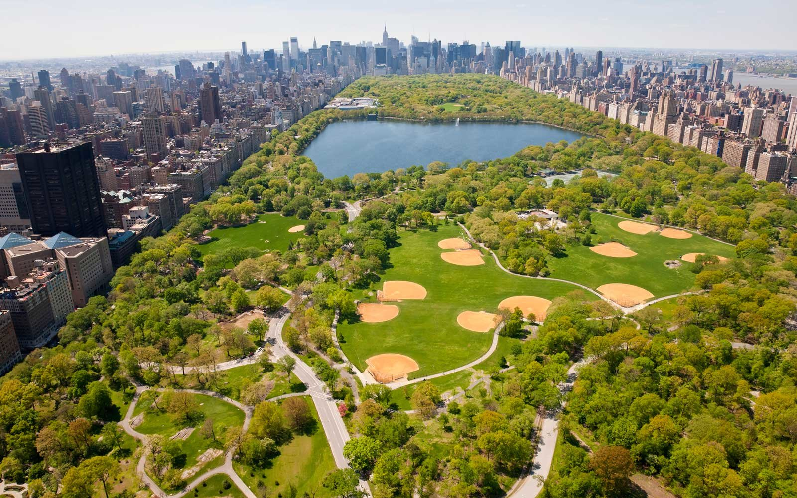
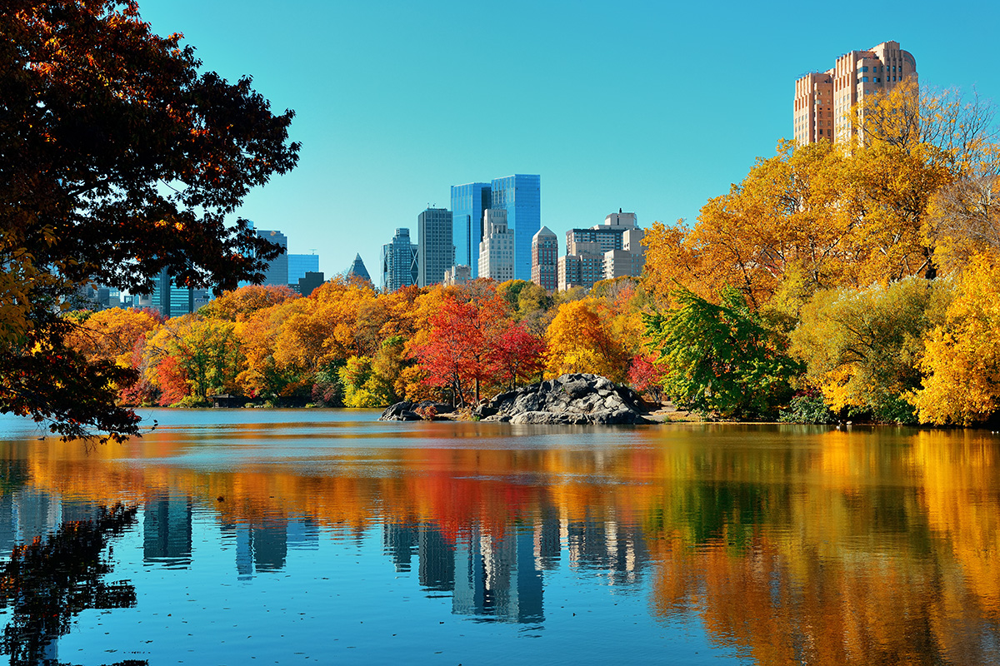
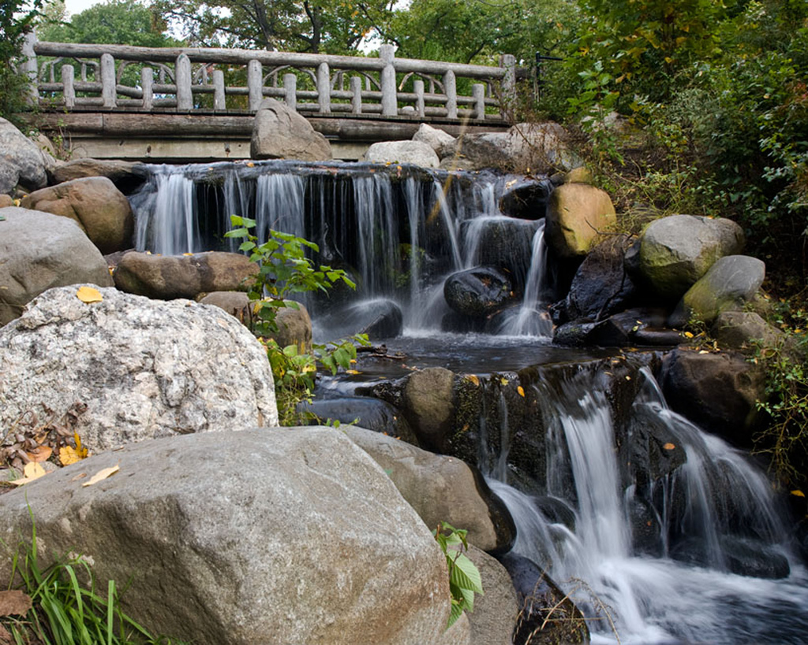
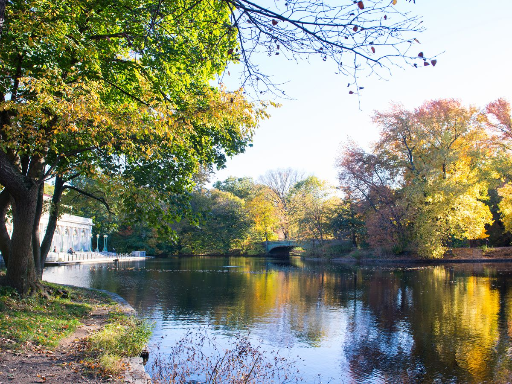

Central Park is an urban park in Manhattan, located between Upper West Side and Upper East Side. You can take A,B,C,D,E,R,N,W,1 and 2, trains to get to Central Park.
 Prospect park is located in Blookyn. It is part of the Brooklyn-Queens Greenway, and is the second largest public park in Brooklyn. You can take the B & Q trains to get there.
 